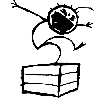
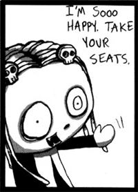

(日記とか言うモノ)
噂のパーフェクトガイドを買おうと本屋によったがみつけられず。
ちょっと時間がなかったのであちことはよれなかったんだが、やっぱりちょっとしたとこでは置いてないのかなあ。週末時間があったら探してみるか。
とまあ、そんな感じなんですが、他のBBSとか見ると、すでに購入した方もいるようですね。
しかしというか、やはりというか・・・・・ぬるい本のようだ。
半分がグッズ紹介？どっかですでにもう聞いたような話？
うむむむ、とりあえずこの目で確認するまでは信じないぞ。ふんがっ。
とりあえず、発行元の情報更新されてたね。この紹介文は期待させるなあ。ああ、やっぱり手に取るのが怖い。
思わす衝動買いで、となりのスーパーヒーロー・クロニクル注文しちゃった・・・・
アメコミではこういうのってけっこうあるけど、映像でってのはなんか珍しいからなあ。古いスーパーマンのアニメとかちょっと見てみたくなってなあ。
すてきなハロウィン。ハロウィン、ハロウィン。（ナイトメア ビフォー クリスマスの歌風に）
とまあ、私の脳内以外ではあんまし盛り上がってないハロウィンですが（日本じゃしょうがないか）、私の中では激盛り上がり中！なぜかというと、まるで合わせたかのようにあちらの世界から素敵な贈り物が届いたからなんですよ。この贈り物最高！太陽パワー充填！
なんのこっちゃわかりませんね。まあいいんです。楽しいことは小出しにしないと、もったいない。
それはともかく、あちらのCartoonNetworkでやってるんだけど、まだ日本じゃ放映してないやつで、ぜひ見てみたなあというのがありまして。スペースゴーストのトークショウ？いやいや、これもまた確かにそうなんですが、とりあえずおいといて。
Grim & Evil これですよ。これ。
ハロウィンで紹介するにはいい感じ。
これのGrim（骨のほう）に出てくる女の子、よくないですか？名前はMANDY。たしか子供時代のキーン先生の声をやった人がやってるんですわ。
絵柄的にデクスターパワパフ系かとおもいきや、監督のMaxwell Atomsはなんとカウチキのライターさん。しかもこの人どーも作品の中で声も担当しているみたい。すっきやのお。
おまけ。Evil のほうのへんな熊の頭にのってる脳みそ、あれジャックの声の人みたいです。（まじかー）
隠しページってやつ作ってみたり。まあ、一応このサイト小中学生も訪れるようなので、隠しときました。
最近、「いい人に思われたい」みたいな自分がいるのに気が付いて、それを打破するためにこんなのを作ってみた。
もうじきですよ、パーフェクトガイド。
素敵なハロウィンの贈り物になるかどうか、激しく心配、極めてドキドキ。
しかし、こういうものって必要以上に期待をしてはいけないものなんだよねえ。
まえに、日本では（非常に）珍しく、そして（本当に）数少ないハンナ・バーベラを扱った本として有名な「ケンケンと愉快な仲間たち」って本を買いました。激しくガッカリ、極めて期待はずれ。
いや、これはこれですっごく面白いんですよ。いい本だと思います。
ただ、この本の扱っているのは、基本的に日本で放映されたハンナ・バーベラアニメの話であり、吹き替え版の裏話みたいなことなんです。しかも情報系というより、当時を振り返って・・みたいな軽いエッセイ風味。
私が期待していたのは本場のハンナ・バーベラアニメのみっちりむっちり濃いデータベース的みたいなものだったんですよ。ハンナ・バーベラの成り立ちから歴史、各アニメの完全なるリスト。それに対応した豊富な画像。「これさえ読めば、あのアニメのすべてが把握できる！！」そんな期待が、もう脳内を駆けめぐり、頭の中ではそんなめっちゃスゴイ理想の本が完成していたんですよ。そんなか入手したものだから、まるで想像していたものと違ったことが大きなショックでしたね。ショックというより脱力か。
たとえば、スペースゴーストとか、うちにある情報なんかよりもずっと薄いんですよね。これで終わりかよ？てなもんです。
まあ、これは妄想膨らましすぎた私が悪いんですけどね。そもそもこの手のってのは権利問題がややこしくて発行すること自体が難しいらしいですから、ちょっとでもふれることができるだけでもありがたいんですよ。
まあ、そんなわけで、パーフェクトガイド・・・・あんまし期待を膨らませすぎちゃいけませんよ。
でも、だったら「パーフェクト」なんてつけるなよなあ。期待するじゃないか。
Web日記みたいなもの書き始めてから、いまさらながら気が付いた。
このWeb日記というやつは、普通の日記と違って、あきらかに読まれることを強く意識してるということだ。
まあ別にこんなとこ読まれなくてもいいや。自分の好き勝手に・・・とかいいながら、前の日記とか読み返してみると、間違いなく、単なる独り言ではなく、だれかに向かって話しかけている。
そう、これを読んでいるあなたにだ！
あなたが誰かはわからないが、そんなダレでもない誰かという存在を強く強く意識してる。
だから単なる独り言のグチのつもりでも、「なあ聞いてくれよ、ひでえんだぜ」ってことだし、
「こんな面白い本があるんだ、どうよ」「こう考えるんだけど、君はどうかなあ」「オレ凄いことおもいついちゃった、聞いてくれよ、そして感心してくれよ」みたいなことだ。
早い話、純粋な日記と違ってより自己顕示欲が強いものになっている。
・・・と言っちゃうとなんかネガティブな感じなので言い換えると、普通の日記はまあメモみたいなものだ。しかしweb日記は「発言」。
実際に相手から「返事」が返ってくるかどうかはさほど問題じゃない。誰かはわからないが「もしかしたら読んでいるかもしれない誰か」を意識することはただのメモとは違う恍惚感がある。恍惚感はおおげさか。書きがいがあるってとこくらいかな。
なるほど、普通の日記ではなかなか続けるのは難しいが、これなら意外に続くものなのかもしれないなあ。
・・・・・とかいって、なんかうまいこと言ってまとめようかとか、気のきいたおもしろいことでも書こうかとおもったが、うまくまとまりそうもないし、考えるのも疲れたのでやめた。
このいいかげんさや、気楽さがいいんだろうな。Web日記。コラムのようなコンテンツじゃこうはいかない。
そんなわけで、文章の添削もしないし、オチやまとめもなく終わる。
ハロウィンが近いってんで、最近ゴス系のアメコミを集中的に読んでます。
ま、ほんとはハロウィンとは関係ないんだけどね。
たまたま、注文しててやつが偶然にもこの時期に到着が重なってただけなんですが。
夏に注文してやっと届いた・・・・
今読んでるのは「JTHM」こと殺人狂ジョニー（Johnny the HOMICIDAL MANIAC）
レノーアに近い絵柄なんですが、より陰惨で先鋭的。
とにかく主人公が殺人鬼のサイコ野郎なんで人殺しまくり。殺す殺す。シャレにならないくらい。
ヤベエのはこれが面白いこと。多分文章だけにしたら後味の悪い、ほんとに陰惨な話なんだろうけど・・・・
これ読んで笑ってるのね、オレ。
おもしろいのは、この主人公のジョニーも漫画を描いてるんだけど、その漫画も載ってること。それもまたおもしろかったり。タイトルはHAPPY NOODLE BOY。
ただ、ちょっとセリフの文字が独特でしかもけっこうみっちりと多いんで読みにくいんだ。ジョニーのセリフ回しも独特で、単語そのものはそう難解でもないんだけど、ひどく時間がかかりました。ああ、もっとペラペラ読めるようになりてえなあ。

今回のコミックスを読んで、コミックスとアニメの脚本の違いに気が付いた。
それは季節感。
コミックスは月刊だから、月に一回出る。一方アニメはリピート放映される。
これにより脚本におおきく違いが出ているようだ。
大雪、バレンタインデー、そしてハロウィンなどコミックスはその季節・時期ごとのネタがけっこうある。アニメはいつ放映されるかわからないから、なるべくそういった季節ネタはないように思える。
そう考えると、コミックスはコミックスで、アニメでは出来ない話をやってるんだなあ。
メディアの違いによって表現や物語が変わってくるものなんだなあ。ちょっと面白いテーマかもしれないね。
ロミオ、やっぱりもう終わるみたいでした。名作劇場にしては短くないか？
それはともかく、パワパフパーフェクトガイドってのが出るみたいですねえ。
そんなの噂にもでなかっただけに、ビックリ。
いまさら？なぜこの時期に？もしかしたら、映画公開してから作り始めたのかな？
そんなことより中身ですよ中身。
ほんとにパーフェクトな内容なのかどうかが一番のきがかりだ。
ゆるいキャラクター紹介だとか、グッズ紹介ばっかりだったら許しませんよ。
タウンズビル年表だとか、博士の発明リストだとか、スーパーマン競争で出てきたヒーローすべて紹介するとかみっちりむっちり濃いやつあるんだろうな。
そうでなくとも、すべてのエピソードとそのエピソードごとのスタッフおよび登場キャラリスト＆声優のリストくらいはあるんだろうな。
・・・・・・あるんだよね。ねえ。頼むよほんと。
massangeanaさん とこより薄かったら泣くよ。
なんだかぽこっと時間ができた。まあ台風の目みたいなもので、また明日からモーレツな日々が・・（って明日は金曜だろ！・・・また休日があぁぁ）
それはともかく、たまってたビデオをみることに。
げえええ、アルフレドが死んじゃったよ～。「遠くにいても僕は君といっしょだ」
アルフレド～！！！
スカパーで「ロミオの青い空」がやってるんですが、これいいよ。
ムーミンから続いたいわゆる「名作劇場」。噂じゃ聞いたことはあっても「ロミオ」を見たのはこれが初めてなんですが、いきなりはまった。初めに出てくる人買い通称「死神」がカッコいいんだ。
天使アンジェレッタも萌えな感じなんですが、熱い男の友情ほとばしる、熱い熱い話だったとはねえ。ぐっときたよ。ロミオとアルフレドの関係がいいんだよね。
オレの好きな「摩利と真吾」みたいな感じ。今風ならゴンとキルアってとこか？
そのアルフレドが死んじゃうなんて、熱い別れのシーンには男泣き！
後半の名作劇場はしょぼいと思ってきたけど、これは（・∀・）イイ！！
ああ、今まで知らなかったなんてオレのばか～。
でも、アルフレドはいないのにまだ話は続くみたいだなあ。うーんどうなるんだ？
ちなみに名作劇場で好きなのは「ペリーヌ物語」と「赤毛のアン」。
この二つは原作もあわせて何回みたことやら。
「黒い兄弟」も探してこよっと。
あ～～あ～もう、忙しいったらありゃしない。なんで、仕事ってのは重なるときは重なるものかねえ、もうすこし均等に配分されんものか。
まあ、仕事にかぎったことじゃないけどさ。結婚式とか、葬式とかもヘンに重なったりしませんかね。不思議なもので。そういや、お金もいっぱいあるとこには、いっぱい入るようになってるし。
かたよるってのは、世界の自然な姿なのかもねえ。熱力学第二法則はどーなってるんだ！といいたい。
もう、そんなものはどうでもいいから、なんとかしてくれ～。
なんて、こんなこと書いてもしかたがないのはわかってるんだが、すこしはスッキリするかなあ、と思って書いてる。つうか、後で読み返したときに、この時期のオレがどんな状態だったのかわかるのもいいかもしれない。＜おお、日記っぽい。
と、冷静にみられるもう一人の自分もいるようなので、まだオレは大丈夫なようだ。
この日記の背景の絵はなんぞや？
なんてカキコがBBSにあったので、ご紹介いたしましょう。
リビングデットの女の子「レノーア」ちゃんです。
ゴス界のパワーパフガールズと私が勝手に思ってるレノーアちゃんは、ベリーキュートな女の子。ローマン・ダージという人が描いてる「LENORE」つうアメコミの主人公です。
パワパフとは物語は全然違うんだけど、なんとなく造形は似てませんか？
パワパフに匹敵するほどスゲエ好きなコミックなんですよ。
アメコミにはゴスってジャンルが存在してるんですが、簡単に言うと一年中ハロウィンな世界。
「ナイトメア ビフォー ア クリスマス」をイメージしてもらうとわかりやすいかな。他にも好きな作品はいっぱいあるんですが、一番はコレ、「LENORE」！
この物語のキャラにレノーアが好きでたまらないのに、レノーアからは嫌われていて、なんども殺されちゃう（笑）Mr.GOSHってのがいるんですが、もうほとんどそいつの気持ち。
ああ、そのうち別館でも作って紹介しようかなあ・・・・
スペースゴーストのページまで作っちゃったんだから、これくらいしてもいいかなあ。
なんかテンション低いときって日記みたいなものはモロそれが出ていやだね。なんだろね、昨日の。意味不明だよ。
それはともかく、まんがの森渋谷店、今日見に行ったら閉鎖してました。
でも、11月にはリニューアルオープンするみたいです。なんでもアメコミ中心で、他の支店とは違った形にするみたいなこと言ってるんで、もしかしたら店舗名もかわるのかしらん。「アメージング・マンガ・フォレスト」とかだったらオモシロイかも。
なんにせよいいことかも。
なにしろ、最近はアメコミのスペースがエロマンガに浸食されていて全然使えなくなっていたので、アメコミ専門店になるのは喜ばしいことだ。まあ、競争も激しかったんだろうな。
渋谷なんぞ、大型店までマンガ専門店みたいなこと始めるし、ツタヤもマニア向け的マンガを扱っていたり、目の前に「まんだらけ」があるし（まんだらけは新刊も扱ってたりする）と、かなり厳しそうな感じだったものなあ。
バイトのあんちゃんがアメコミのことちっとも知らなくて、使えねえ～ってことはこれでなくなるかなあ。まあ、マイナーなタイトルばかり求めていたオレが悪いのかもしれんが、トライソフトみたいに
「○○あるかなあ・・」
「あるよっ」
みたいなノリは欲しい。ぜひマイナーなタイトルをいっぱい置いてくれ。
マンガの英語版はいらないからさ。
web日記というのはやるつもりがなかった。
なんでやる気になったかというのは、日記の最初にかいてあることだ。
一方、なんでやる気がなかったというのは、サイトのコンテンツと直接関係ないからというストイックな考えもあるにはあった。だが、もっとも大きな理由は「知り合いに読まれたくない」ってのがでかい。
自分の素の部分がモロに出てくるだろうから、ちょっとね～抵抗あったのよ。webで知り合いになったといっても基本的にはwebのみの知り合いだ。実生活とは直接関係ない。身近な知り合いじゃなければこんなものいくらでも読んでもらってもまるで抵抗はないんだが、さすがに・・・・身近な知り合いだと・・・
書く内容によってはシャレにならんこともあるんじゃないかい？別に悪口書くつもりとかないんだけどさ、あんまし心のうちをさらけだしたくないじゃない。仕事忙しいとかいって、こんなの書いてるヒマあるんかい。とかつっこまれたくないし。そもそも極めて恥ずかしい。
いや、違う。それ以前の問題だ。そもそも、知り合いにはオレがパワパフ好きだなんてこと言ってないし、こんなサイトやってることすら言ってない。ああそうとも、オレはカミングアウトすらできないチキン野郎さ。ああそうさ、アメコミだって隠れて買ってるんだ。
とまあ、そんなわけで、なんだオレがこのサイトやってるなんてこと知り合いはダレも知らないじゃないか。ってことにようやく気が付いて、気楽になりました。で、こんなことやってる。
ですから、もし、コレがオレって気が付いてしまった身近な知り合いの方、わかっていても黙っていてください。お願いします。でないとシャイな私は次の日から家からでられなくなってしまいます。
嘘です。
このサイトまで来たってことは、キミもけっこうなアレですから、ゆっくりパワパフ話でもしましょう。アメコミでもいいですが。でも、みんなには言いふらさないでね。
お絵かきって楽しいな。
webでお絵かきできる掲示板てのが世の中には存在するわけなんですが、最近はまってます。
JAVAなんで、ちいさなブログラムなんですが、なかなか高機能。とはいえ、市販のやつみたいに高度な編集機能やレタッチ機能なんてないんですが、これで十分なんだなあと思ったり。
なにしろ、こんな小さなプログラムのツールですら機能をフルに使い切れないんだから。
でも、中にはこれでどうやったらこんな絵が描けるんだろうか？と不思議に思うくらいの絵を描く人がいるんで、驚きだ。やっぱツールじゃないんですねえ。ウマい人はなに使ってもウマい。と、単純な話。
最近はそのお絵かき板にも慣れてきて、コツってものがわかってきたんですが、きっとこのコツってやつはみんなそれぞれ違うんだろうなぁ。もちろん私は自己流ですが、その他の人もまた自己流。
ただねえ、うちのパソコン、ノートだからかしれないけど、薄い色味がはっきりでないのよね。だから自分が描いたものを他のパソコンで見てみると、けっこうドギツイ配色になっていてビックリしました。
ま、いいや。それはともかく、お絵かきって楽しいね。
今日も仕事でした。が～んばれ、まけるな、ちか～らのかぎり～ (=TДT)
でも、帰りに久々にアメコミ屋によったら注文しておいた本が届いていたので、急にハッピーな気分になりました。「HALO AND SPROCKET」KERRY CALLENって人が書いてるシリーズです。
通称ハロ・スプ。
天使のハロとロボットのスプロケットと普通の女の子カティが繰り広げるユーモラスなお話。
日常のちょっとしたことが哲学的、形而上学的に展開してゆくお話なんですが、堅苦しいことはまったくなくて、大笑いできる。
特に天使のハロは天使だけに視点が超宇宙的というか、 超越的に物事をとらえて、一方のスプロケットのほうはロボットだけにロジック重視で語ります。ほんとうにくだらないことを・・・・
カティは普通の子だけに途中でついていけなくなってブチキレルと。
なんにしても、この飄然としたペースがいいんだよな～。最近ハロがかっこよくなってきたような。
最近オフィシャルのサイトも出来たようで、ますます期待ですわ。
www.haloandsprocket.com
あ、そうそうホントはパワパフの新刊買いに行ったんだっけ。
今回はハロウィンだけにコスプレマンガと化してるな。（今読んでる・・・・・）
いい！これいい！これは買いだよ！みんな！！！
一日に何回も日記を書く。そんなすばらしい発見をみせつけてくれたH氏に感謝をして、さっそくまた書いたり。
逃避です。逃避。逃避万歳！！ ヽ(´ー｀)ノ
パワパフアニメの好きなタイトルをランキングしてみた人がおられます。結果はただの文字の羅列にすぎないんだけど、そこまでにいたる葛藤を想像すると、かなりめんどうくさいしろものだ。
どっちがいいかなんて比べられないやつとかあるじゃないですか。でも無理矢理順位を決めるっつう作業をすると、パワパフがっていうより自分の内面を深くのぞき込むような作業になるんじゃないかと思う。
順位をつけるにあたって、へんに自分に言い訳してたり。
自分がやったらどういう順番になるんだろうか？
多分上位には「うそつきはダメよ！」とか「おふろなんてキライ！」とかが入りそうな予感。
「正義のメイジャーマン！？」「スーパーマン競争」「巨大ロボ！ダイナモ登場」とかけっこう好きなんだが、どのあたりにくるんだろうか？自分でもよくわかりません。
あんまし面白くない話だと思ってるやつは「パワーがほしい！」とか「パワーランチ」。あ、「ブロッコリーの逆襲」とかもあんまし好きじゃないんだよね。ただ、こうやって思いついただけでもこれらはまだマシなのかもしない。
でもなあ、多いよエピソード。どっから決めていったらいいのやら。エクセルかなんかで、表作って、「思い入れ」「イカしたシーン」「構成」「ストーリー」とかポイント入れて、最後に合計値で一気にソートしてみようか。そっから修正すると。
ファン投票とかのランキングだと、まあ妥当なとこが上位にきたりするんだけど、個人ランキンクだとかなりその人の個性がでててオモシロイね。おいおい、それがそこにくるのかよっ！みたいな。
いかんなあ・・・また逃避のネタが増えたじゃないか。
こんなもの書いてるヒマはないんだけど、そんな時ほど書きたくなります。はい、逃避ですよ、逃避。
やっぱり休日仕事ってのはテンションあがりませんなあ。
こんなときは、自分が二人いたらとか、一日が48時間あったらなあと考えるんですが、どちらもきっとダメでしょう。
二人いたって、どちらも自分なんだから同じようにダラダラしてるだけです。
48時間あったって、どうせギリギリまでダラダラしているので、同じことです。
とか、そんなこと考えてること自体、逃避。
こんな時は、ネットゲームとかやっていない自分はまだ救われてるんじゃないかとかも考えたり。
絶対おもしろいと思ってるんですが、それゆえに、そんなものやった日にゃ、廃人間違いなし。
時間貯金とかできるといいんだけどなあ。これって、ドラえもんとかであったような気がします。
そうだよ、たしかあったよ、そんな話。
今、どの話だったか、調べにゆこうとした自分をかろうじて押しとどめました。
最近あちこちで、web日記とか言うモノを読んでいる自分がいたりする。
もしかしたら、ものすごく楽しいものなんじゃないかと思いはじめるようなった。
て、いうかね、つらつらと戯れ言を書くために「SUGER & SPICE 」なんてこと始めたんだけど、性分なのかちっとも戯れ言じゃなかった。いや、内容は戯れ言なんだけど、な～んにも考えずになんの検証もせずにいいかげんなことを書く予定だったんだが、なぜか一生懸命調べて書いている自分がいたりするんですよ。
まあそれはそれで、よいのだが、もっと何も考えずに書ける場が欲しいなと。
テーマもなにもなく、しかもパワパフともなーんにも関係なく。ただ、だらだらとつまんないことを書くだけ。
はなからこんなもの読むやつなんざいねえよな。・・と思って書けばストレスの発散にもなるかもしれない。なんて。
某所の日記みると、別に毎日書いてるわけでもないうえに、一日に何回も書いてたりする。
それっていいな。と。 思ったわけですな。
とりあえず、仕事忙しすぎです。だれかなんとかしてください。お願いします。でもギャラは私にください。